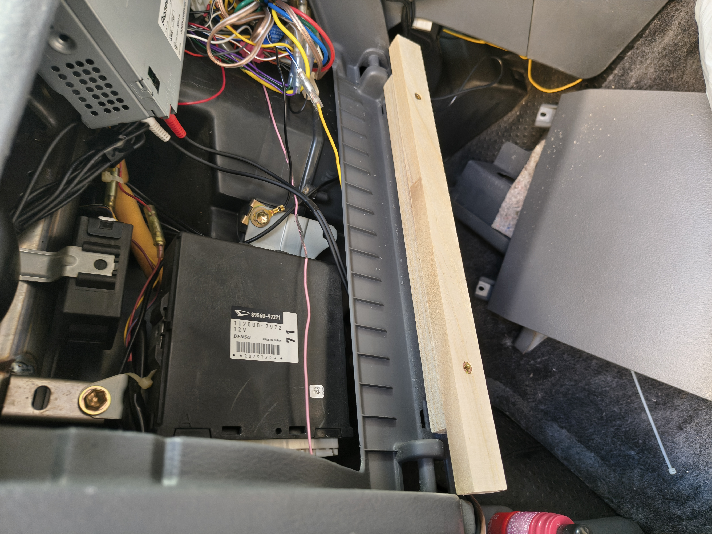

作業風景
実際の作業中の写真です。分解や加工の様子を撮影しました。

加工と整形
完全に扉部分を撤去して、上下に棒状の木材で設置面を作成し、板を貼り付けました。
Rの部分を合わせるのが一番の難所で、ここが最大の加工ポイントです！
塗装・仕上げ・ステッカー
整形後は塗装と仕上げを行いました。さらにアクセントとして「テッドのシール」を貼って、ちょっと賑やかな仕上がりにしてみました（笑）。
フラット化により、助手席のスペースが広くなり？ｗ 機器のレイアウト自由度も上がり、見た目もスッキリしました。
 ← トップに戻る
← トップに戻る